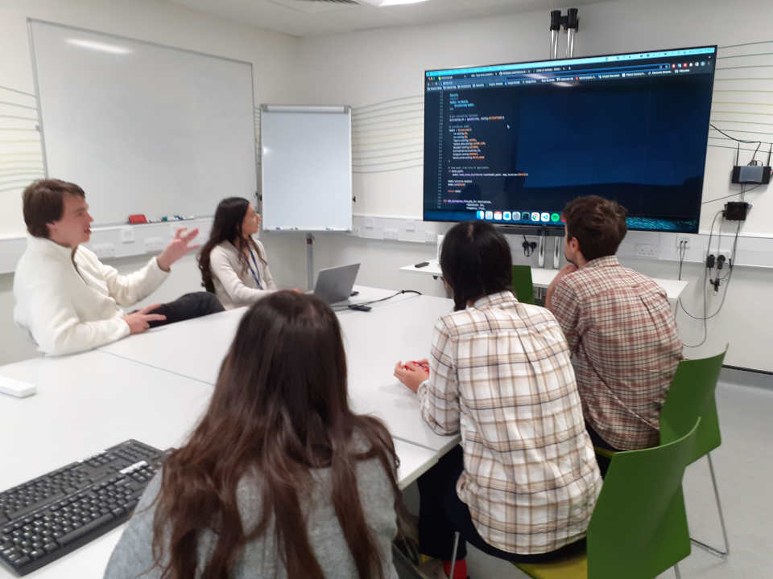

Code review is great (yet nobody does it).
Thibault Lestang
Department of Aeronautics, Imperial College London

The Oxford Code Review Network
What sets research software apart
- Developed in a wide variety of contexts.
- Written to answer (a) specific question(s).
- Knowledge is the end-product, not software.
- Non-uniform software engineering experience.
- Mostly single developers.
(Peer) Code review
It’s not your usual paper peer review process!
- Informal.
- Routine.
- Low-stakes.
Changing scale

In person
Delimited time in the week
Avois written communication
Short meetings
It takes effort to
- Read source code.
- Understanding it.
- Forming an opinion about it.
More short meetings more effective than fewer longer ones.
(Async) Preparation
Reviewer extracts some code to review and provide context and expectations.
Reviewers can spend up to 30min going through the code.
It doesn’t have to be perfect yet
It is productive to look at code that is WIP.
The only expectation is that code is readable by reviewers.
It’s not about the bugs

Target: understandability
Code review can be motivated by different aspects of software quality.
Defining a clear scope sets expectations and focuses feedback.
Advice
Use a checklist
- Poor formatting.
- Dead code.
- Missing documentation.
- Obscure names.
- Complex conditionals.
- Obscure one-liners.
- Duplicated code.
- Long procedures.
- Long parameter lists.
- Global state.
- Abuse of primitive types.
- Data clumps.
- …
Use a checklist… as a guide
Some code can be crystal clear to language/domain experts and perfectly obscure to beginners.
Attitude
Communication is key
Author: This loop I wrote looks too complicated to me.
Reviewer: Hmmm yes. You could just use a pipe and
xargs.
Author: What’s xargs?
Reviewer: It’s basically mapping a command over a set of inputs - think functional programming!
Author: …
Reviewer: Alhtough you could also do the same thing with
sed.
Author (looking frustrated): I have no idea what you’re talking about.
Giving feedback takes practice
- Own you opinions.
- Make it about the code.
- Be specific.
- Suggest an alternative.
Your function name doesn’t make sense
I think this function’s purpose would be much clearer if it was
given a more explicit name.. perhaps
apply_bwd_transform?
Code review is both technical and social
Code reviews can drive both inclusion and exclusion.
A bad reviewer tries to force their preference on you. A good code reviewer makes your code conform to certain principles, but not opinion. (Quote from survey participant from Greiler, 2016)
Define (and refine) a policy
- Well defined process.
- Default scope.
- Moderator(s).
- Code of conduct.
- Conflict resolution.
And yet…
And yet we stopped
Bottom up doesn’t go far without top-down.
Project managers must:
- Facilitate code review.
- Motivate it.
- Make it part of the team’s culture.
Software quality: a “nice to have” ?
- Accelerates research.
- Drives inclusion.
- Attracts and retains talents.
- Magnifies impact.
Software quality: a must have.
Research software development should hold particularly high standards of quality.
- Auditability
- Reproducibility
- Reuse, as-is or as a part of something else